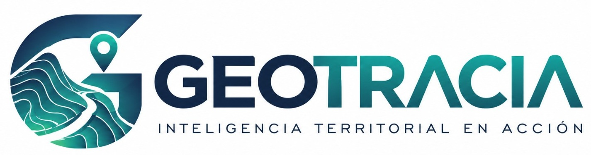

⌁01 / INGENIERÍA
Ingeniería y consultoría
Evalúa alternativas, integra antecedentes y fortalece estudios de factibilidad con una lectura territorial más completa.
Explorar solución ↗
Transforma información geográfica dispersa en una visión clara, compartida y accionable. Planifica mejor, anticipa riesgos y avanza con seguridad.
GEOTRACIA conecta datos, personas y proyectos para que cada decisión tenga contexto y cada avance pueda seguirse.
Evalúa alternativas, integra antecedentes y fortalece estudios de factibilidad con una lectura territorial más completa.
Explorar solución ↗Visualiza obras y restricciones, coordina equipos y supervisa el avance con información georreferenciada.
Explorar solución ↗Apoya la planificación, la gestión de infraestructura y la priorización de iniciativas con evidencia territorial.
Explorar solución ↗Explora el territorio desde una plataforma pensada para equipos que necesitan entender qué ocurre, dónde ocurre y qué hacer después.
Un flujo de trabajo claro para que los equipos puedan enfocarse en lo que importa.
Organiza las fuentes y antecedentes relevantes de tu territorio en un espacio común.
Visualiza capas, relaciones y ubicaciones para identificar oportunidades y alertas.
Coordina tareas, monitorea hitos y convierte los hallazgos en próximos pasos concretos.
Comunica avances con información consistente y reportes comprensibles.
Acceso organizado a la información que tus equipos necesitan consultar.
Contexto y seguimiento para comprender el estado de los proyectos.
Una base de trabajo adaptable a distintas escalas y necesidades.
Conversemos sobre tus desafíos y descubre cómo GEOTRACIA puede ayudar a tu equipo a trabajar con más claridad, control y agilidad.
Solicitar una demostración ↗Sin compromiso · Una conversación enfocada en tus necesidades